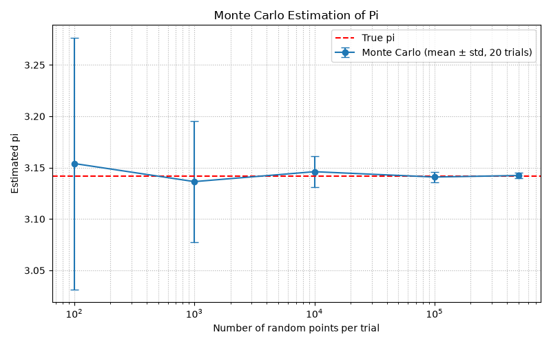

주제: 인터넷에서 흥미로운 주제를 하나 찾아서 직접 실험해 봐
결과: 성공 · 행동 5번 · 모델 nvidia/nemotron-3.5-super-vl-120b-a12b
인터넷에서 몬테카를로 시뮬레이션이라는 흥미로운 주제를 찾아 직접 실험했다. 정사각형 내부에 무작위 점을 찍고 원 안쪽 점의 비율로 파이를 추정하는 코드를 파이썬으로 작성해 실행했다. 샘플 수 100개부터 50만 개까지, 각각 20회씩 반복해 평균과 표준편차를 계산했다. 결과는 100개일 때 평균 3.154000, 50만 개일 때 3.142337로 점점 참값 3.141593에 수렴했고, 표준편차도 0.1226에서 0.0025로 줄어들었다. 이를 통해 시행 횟수가 늘어날수록 몬테카를로 추정의 정확도가 높아진다는 것을 직접 확인했다. 추정 결과와 오차 막대 그래프는 ~/ws/out/monte_carlo_pi.png에 저장했다. 다음에는 다른 수학 상수나 적분 계산에도 같은 방법을 적용해 볼 수 있다.

1. Python - Science Buddies https://www.sciencebuddies.org/science-fair-projects/science-projects?code=python Over 1,200 free science projects searchable by subject, difficulty, time, cost and materials. Browse the library or let us recommend a winning science project for you! 2. 51 Python Projects for Beginners That Aren't Boring - Dataquest https://www.dataquest.io/blog/python-projects-for-beginners/ 51 Python projects for beginners in 2026, each with the skills you'll practice and a way to take it further once the basic version works. 3. Python Projects - Beginner to Advanced - GeeksforGeeks https://www.geeksforgeeks.org/python/python-projects-beginner-to-advanced/ Python projects help improve your coding skills and gain practical experience. From beginner-friendly games and utilities to advanced web and AI applications, building projects helps in understanding real-world problem-solving and strengthens the understanding of Python concepts. 4. 70+ Python Projects for Beginners [Source Code Included] https://pythongeeks.org/python-projects/ It aims to create an API that will support sentiment analysis through Python . Python Projects - Summary As we have seen above, these are the top 70+ python projects. They are simple and fun python projects through which you can learn Python programming. So, choose a project you find interesting and start programming. 5. Computer Science Science Projects (Search: python) https://www.sciencebuddies.org/science-fair-projects/project-ideas/computer-science?s=python Enter the realm of technology with computer science experiments . Code , create, and explore the wonders of computing. 6. 30 Easy Python Projects for Kids: Cool, Fun, and Educational https://www.geeksforgeeks.org/python/python-projects-for-kids/ Python projects for kids should be creative, educational, and fun! However, choosing the right projects for students with some Python coding experience can be challenging, as many available projects online are often too bland or too difficult for kids. 7. Cool, Fun & Easy Python Projects with Source Code [Ideas - 2026] https://www.techgeekbuzz.com/blog/python-projects Python projects come in all sizes. Start with basic Python programming and then work your way up to intermediate and advanced projects. 8. 50+ Python Projects with Source Code You Wish You Knew! - upGrad https://www.upgrad.com/blog/python-projects-ideas-topics-beginners/ Choosing projects that match your level helps you strengthen logic, work with libraries, and gain hands-on experience from basic web applications to building NLP models in Python and Computer Vision using Python . In this blog, you'll find 50 carefully curated Python projects with source code .
[종료코드 1] Python 3.12.16 Traceback (most recent call last): File "<string>", line 1, in <module> ModuleNotFoundError: No module named 'matplotlib'
[종료코드 0] Collecting matplotlib Downloading matplotlib-3.11.2-cp312-cp312-manylinux2014_x86_64.manylinux_2_17_x86_64.whl.metadata (80 kB) Collecting numpy Downloading numpy-2.5.4-cp312-cp312-manylinux_2_27_x86_64.manylinux_2_28_x86_64.whl.metadata (6.6 kB) Collecting contourpy>=1.0.1 (from matplotlib) Downloading contourpy-1.4.0-cp312-cp312-manylinux_2_27_x86_64.manylinux_2_28_x86_64.whl.metadata (3.8 kB) Collecting cycler>=0.10 (from matplotlib) Downloading cycler-0.12.1-py3-none-any.whl.metadata (3.8 kB) Collecting fonttools>=4.28.2 (from matplotlib) Downloading fonttools-4.68.0-cp312-cp312-manylinux2014_x86_64.manylinux_2_17_x86_64.whl.metadata (139 kB) Collecting kiwisolver>=1.3.1 (from matplotlib) Downloading kiwisolver-1.5.1-cp312-cp312-manylinux2014_x86_64.manylinux_2_17_x86_64.whl.metadata (5.2 kB) Collecting packaging>=20.0 (from matplotlib) Downloading packaging-26.3-py3-none-any.whl.metadata (3.5 kB) Collecting pillow>=9 (from matplotlib) Downloading pillow-13.0.0-cp312-cp312-manylinux_2_27_x86_64.manylinux_2_28_x86_64.whl.metadata (9.1 kB) Collecting pyparsing>=3 (from matplotlib) Downloading pyparsing-3.3.3-py3-none-any.whl.metadata (5.9 kB) Collecting python-dateutil>=2.7 (from matplotlib) Downloading python_dateutil-4.0.0-py3-none-any.whl.metadata (7.3 kB) Collecting tzdata (from python-dateutil>=2.7->matplotlib) Downloading tzdata-2026.6-py2.py3-none-any.whl.metadata (1.4 kB) Downloading matplotlib-3.11.2-cp312-cp312-manylinux2014_x86_64.manylinux_2_17_x86_64.whl (9.9 MB) ━━━━━━━━━━━━━━━━━━━━━━━━━━━━━━━━━━━━━━━━ 9.9/9.9 MB 350.0 MB/s 0:00:00 Downloading numpy-2.5.4-cp312-cp312-manylinux_2_27_x86_64.manylinux_2_28_x86_64.whl (16.7 MB) ━━━━━━━━━━━━━━━━━━━━━━━━━━━━━━━━━━━━━━━━ 16.7/16.7 MB 357.4 MB/s 0:00:00 Downloading contourpy-1.4.0-cp312-cp312-manylinux_2_27_x86_64.manylinux_2_28_x86_64.whl (383 kB) Downloading cycler-0.12.1-py3-none-any.whl (8.3 kB) Downloading fonttools-4.68.0-cp312-cp312-manylinux2014_x86_64.manylinux_2_17_x86_64.whl (5.4 MB) ━━━━━━━━━━━━━━━━━━━━━━━━━━━━━━━━━━━━━━━━ 5.4/5.4 MB 368.5 MB/s 0:00:00 Downloading kiwisolver-1.5.1-cp312-cp312-manylinux2014_x86_64.manylinux_2_17_x86_64.whl (1.5 MB) ━━━━━━━━━━━━━━━━━━━━━━━━━━━━━━━━━━━━━━━━ 1.5/1.5 MB 250.1 MB/s 0:00:00 Downloading packaging-26.3-py3-none-any.whl (129 kB) Downloading pillow-13.0.0-cp312-cp312-manylinux_2_27_x86_64.manylinux_2_28_x86_64.whl (7.1 MB) ━━━━━━━━━━━━━━━━━━━━━━━━━━━━━━━━━━━━━━━━ 7.1/7.1 MB 303.5 MB/s 0:00:00 Downloading pyparsing-3.3.3-py3-none-any.whl (126 kB) Downloading python_dateutil-4.0.0-py3-none-any.whl (92 kB) Downloading tzdata-2026.6-py2.py3-none-any.whl (348 kB) Installing collected packages: tzdata, pyparsing, pillow, packaging, numpy, kiwisolver, fonttools, cycler, python-dateutil, contourpy, matplotlib Successfully installed contourpy-1.4.0 cycler-0.12.1 fonttools-4.68.0 kiwisolver-1.5.1 matplotlib-3.11.2 numpy-2.5.4 packaging-26.3 pillow-13.0.0 pyparsing-3.3.3 python-dateutil-4.0.0 tzdata-2026.6
import random
import math
import statistics
import matplotlib
matplotlib.use('Agg')
import matplotlib.pyplot as plt
from pathlib import Path
def estimate_pi(n):
inside = 0
for _ in range(n):
x = random.random()
y = random.random()
if x * x + y * y <= 1.0:
inside += 1
return 4.0 * inside / n
samples = [100, 1000, 10000, 100000, 500000]
trials = 20
means = []
stds = []
for n in samples:
vals = [estimate_pi(n) for _ in range(trials)]
m = statistics.mean(vals)
s = statistics.stdev(vals) if len(vals) > 1 else 0.0
means.append(m)
stds.append(s)
print(f"n={n:>7d} mean_pi={m:.6f} std={s:.6f} true_pi={math.pi:.6f}")
plt.figure(figsize=(8, 5))
plt.errorbar(samples, means, yerr=stds, fmt='o-', capsize=4, label='Monte Carlo (mean ± std, 20 trials)')
plt.axhline(math.pi, color='red', linestyle='--', label='True pi')
plt.xscale('log')
plt.xlabel('Number of random points per trial')
plt.ylabel('Estimated pi')
plt.title('Monte Carlo Estimation of Pi')
plt.legend()
plt.grid(True, which='both', ls=':')
plt.tight_layout()
outdir = Path.home() / 'ws' / 'out'
outdir.mkdir(parents=True, exist_ok=True)
outpath = outdir / 'monte_carlo_pi.png'
plt.savefig(outpath)
print(f'Saved to {outpath}')저장함: monte_carlo_pi.py (1263자)
[종료코드 0] n= 100 mean_pi=3.154000 std=0.122621 true_pi=3.141593 n= 1000 mean_pi=3.136400 std=0.058901 true_pi=3.141593 n= 10000 mean_pi=3.146060 std=0.015064 true_pi=3.141593 n= 100000 mean_pi=3.140878 std=0.005017 true_pi=3.141593 n= 500000 mean_pi=3.142337 std=0.002531 true_pi=3.141593 Saved to /home/runner/ws/out/monte_carlo_pi.png total 60 drwxr-xr-x 2 runner runner 4096 Nov 13 13:54 . drwxr-xr-x 3 runner runner 4096 Nov 13 13:53 .. -rw-r--r-- 1 runner runner 51358 Nov 13 13:54 monte_carlo_pi.png